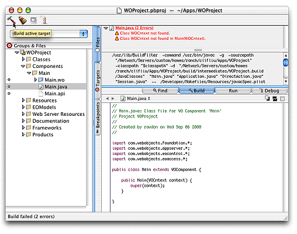
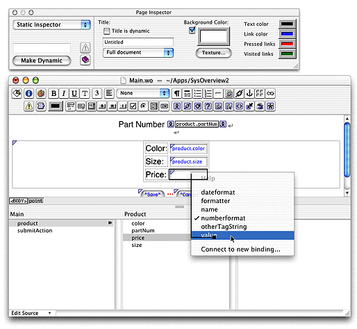

| PATH |

Developing a WebObjects application is a matter of creating your templates, bindings, and Java code files. Although these files are text based and thus could be created using a text editor, WebObjects provides graphical tools that simplify the entire process. The sequence of tasks used to create a WebObjects HTML application with these tools is as follows:
You have already been introduced to EOModeler. Project Builder and WebObjects Builder are discussed in the following sections.
As its name implies, Project Builder manages all of the constituent parts of your application, including source code files, WebObjects components, frameworks, makefiles, graphics and sound files, and the like. You use Project Builder to edit your code files, compile, debug, and launch your application for development testing. Project Builder's assistants help you create new WebObjects components. You also can launch the other development tools from within Project Builder.
Figure 4-4 shows Project Builder in use.
Figure 4-4 Project Builder
You use WebObjects Builder to edit your application's components. WebObjects Builder allows you to graphically edit a component's HTML template. If you prefer, you can switch to the source view from which you can edit the template as an HTML text file. WebObjects Builder also allows you to graphically bind the dynamic elements on your template to variables and methods within your code; you simply drag from a variable to the dynamic element as shown in Figure 4-5.
Figure 4-5 WebObjects Builder

© 2001 Apple Computer, Inc.